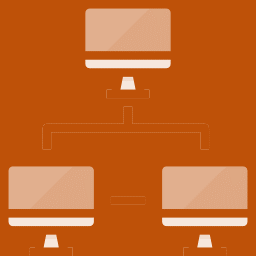
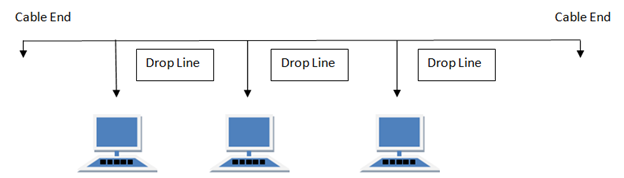
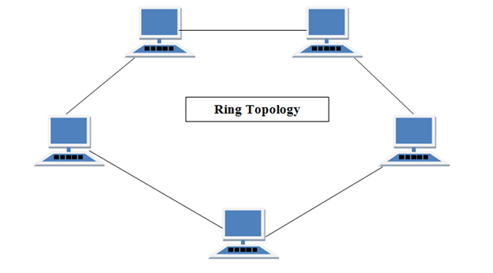
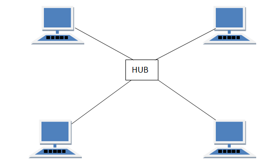
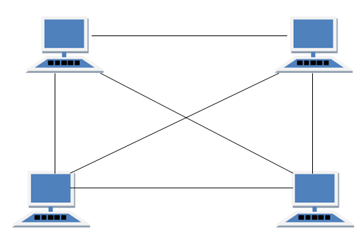
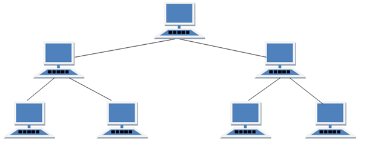
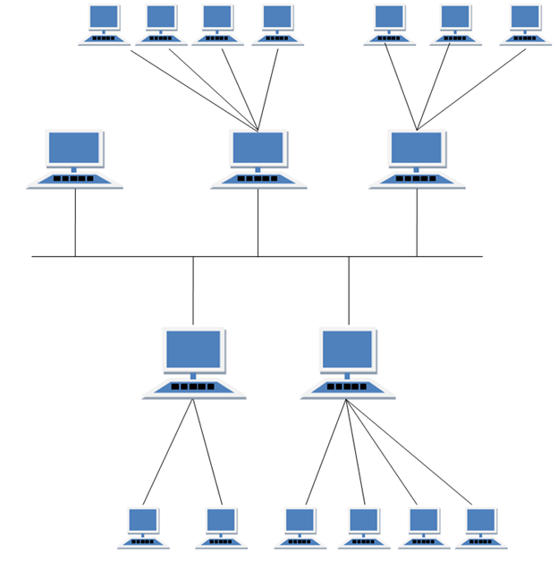

INTRODUCTION
A computer network is a collection of computers and other devices linked together via use networking devices. Networking devices are also called as communicating devices.
Computer networks are important because it ensures effective transmission and sharing of data between different computer devices.
Setting-up computer networks at your homes does not need to be complicated. Few basic pieces of computer hardware are needed to connect your computers and other devices to each other and to the Internet.

Basically, network topology is how the network of devices/computers is arranged through the connection of various nodes through lines of connections.
Imagine a topology as a guide or a map in creating your own network.
There are different types of network topologies that we will be going through in this topic.
Bus Topology
This is a network type in which the computers and network devices are connected to a single cable.

This type of network can transmit data in only one direction. Each device is connected to a single cable.
- PROS
- ☑ Cost-effective
- ☑ Cable is required
- ☑ For small networks
- ☑ Easy to understand and create
- ☑ Easy to expand (through joining two cables)
- CONS
- ☑ When cable fails, the whole network fails
- ☑ If network traffic is heavy, the performance of the network decreases
- ☑ Cable has limited length
- ☑ Slower than ring topology
Ring Topology
This network forms like a ring where a computer is connected to another computer. The last computer is connected to the first. Each computer has two neighbors.

It has a number of repeaters. The transmission is unidirectional.
The data is also transferred in a sequential manner, bit by bit.
- PROS
- ☑ Not affected by high traffic
- ☑ Cheap to install and expand
- CONS
- ☑ Hard to troubleshoot
- ☑ Adding or removing a computer will disturb network activity
- ☑ When a computer fails, the whole network is disturbed
Star Topology
This type features all computers connected through a single hub/switch through a cable. The hub/switch is a central node and all others are connected to a central node.

Each node has a dedicated connection to the hub/switch. This will act as a repeater as well for data flow. This can be done using a UTP, optical fiber, or coaxial cable.
- PROS
- ☑ Fast performance the fewer nodes
- ☑ Low network traffic
- ☑ Switch/Hub can be easily upgraded
- ☑ Easy set-up and modification
- ☑ When a node fails, the others can work smoothly
- CONS
- ☑ High cost
- ☑ Expensive to maintain
- ☑ When switch/hub fails, whole network stops
- ☑ Switch/hub capacity controls the performance
Mesh Topology
This type is a point-to-point connection with other devices. The traffic is carried between two devices which it is connected.

There are two types: (1) partial mesh topology where some of the systems are connected in the same fashion as mesh topology but some devices are connected to two or three devices; and (2) full mesh topology where each and every device is connected to each other.
This type features a full, robust connection. However, it is not flexible.
- PROS
- ☑ Each connection can carry own data load
- ☑ Robust
- ☑ Easy troubleshooting
- ☑ Secure and private
- CONS
- ☑ Difficult to install and configure
- ☑ Expensive cabling cost
- ☑ Bulk wiring
Tree Topology
This type has a root device and other devices are connected to form a hierarchy. Also known as hierarchical topology. It should have at least three levels in the hierarchy.

This is ideal if workstations are located in groups. It is used in WANs.
- PROS
- ☑ Can be extensions of bus and star topologies
- ☑ Easily expanded
- ☑ Easily managed and maintained
- ☑ Errors are easily detected
- CONS
- ☑ Heavily cabled
- ☑ Expensive
- ☑ The more devices, the harder the maintenance
- ☑ If central switch/hub fails, network fails
Hybrid Topology
This type is a mixture of two or more topologies. You may have a department in the office using ring topology while the other uses a star topology. This is called a Hybrid Topology.

It can combine even more than two topologies. Both the advantages and disadvantages are included when you create a hybrid, thus, ideal for a non-conventional set-up.
- PROS
- ☑ Reliable
- ☑ Easy troubleshooting
- ☑ Errors are easily detected
- ☑ Easily scalable
- CONS
- ☑ Complex
- ☑ Expensive
ASSIGNMENT: Draw your own topology!
Using the network devices you've learned at the previous lesson, try to draw your own office network.
Imagine at least 10 workers but they are divided at far ends of a building.
You have a pool of options to create a topology that will fit them to still have a network connection. You may use any (e.g. wireless, wired) connections that you deem appropriate.
You may check sample topologies online.